Guppy Minecraft 2026
We'd like to thank everyone who participated in the 2026 GATE Guppy Minecraft classes and everyone who made them possible! We had so much fun working with you to create games in Minecraft and we hope everyone enjoyed themselves and learned something new.
We hope you all continue to exercise the talents and creativity you expressed here through Minecraft and other creative outlets.
Instructors:
Allen Scheck,
Joseph Friend
Previous Years
2025Loading Your Game
We've sorted download files below which should allow you to continue work on your world and check out
your teammate's worlds. Importing the games will depend on what version you have.
Minecraft Education
Download the Education Edition file and double click the file or use the Import button
in-game.
Minecraft Bedrock Edition on PC
Download the Bedrock file and double click the file or use the Import button in-game.
Minecraft on Android/iOS
Minecraft on Console or Mobile
Minecraft Java Edition (Linux/Mac/Available on PC)
It is possible to convert the file using a 3rd-party tool called Chunker, (which is not an official Minecraft product,
but is generally trusted by the community.)
We attempted to convert some of the files with Chunker, but they were missing a lot of the
essential elements that are exclusive to Bedrock and Education Edition and added some strange
structures due to misreading map heights, so we have not included those. You are welcome to
attempt to convert the files yourself, but they may still require a lot of changes before
they're playable again.
Projects
Below are the projects from each team. Download the appropriate file for your game version, as instructed above. (Bedrock builds will be converted shortly after the last week of class. Check back in at that time for those.)

Tutorial World
This is the latest version of the tutorial world, if you want to learn some tips and
tricks for getting started.
Downloads
Education Edition
Bedrock Edition
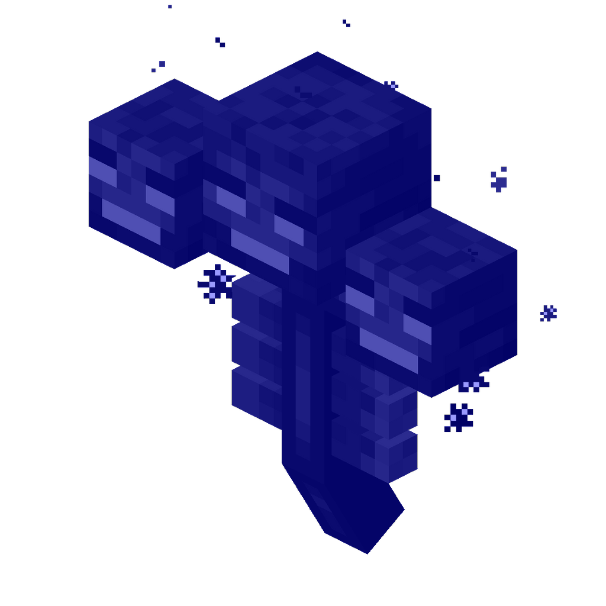
Blue Withers
A creepy underground cave with chests, redstone, and mobs.
Downloads
Education Edition
Bedrock Edition
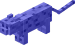
Blue Ocelots
A tower with an underground sewer, maze, mini challenges, and a roller coaster.
Downloads
Education Edition
Bedrock Edition
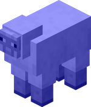
Blue Sheep
A backrooms style escape with monsters to avoid or defeat.
Downloads
Education Edition
Bedrock Edition
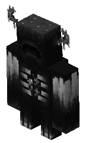
Black Wardens
A 5-story tower with a tunnel and various traps.
Downloads
Education Edition
Bedrock Edition
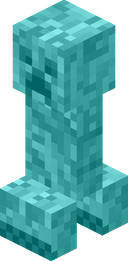
Cyan Creepers
An escape room with parkour, lava, a maze and a mob battle.
Downloads
Education Edition
Bedrock Edition
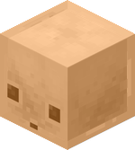
Luminescent Bright Orange Sulfur Cubes
A collection of an escape room, parkour, mini-maze, and an arena.
Downloads
Education Edition
Bedrock Edition
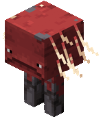
Red Striders
A castle with parkour, an escape room, puzzle parkour, and a boss.
Downloads
Education Edition
Bedrock Edition
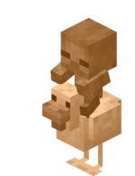
Orange Chicken Jockeys
A rescue of Jeeb the Sheep
Downloads
Education Edition
Bedrock Edition
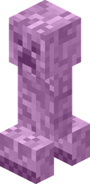
Pink Creepers
A tunnel with a maze, lava parkour, art gallery, and more.
Downloads
Education Edition
Bedrock Edition
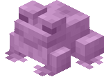
Neon Pink Toads
A journey through challenges based off various Bluey characters.
Downloads
Education Edition
Bedrock Edition
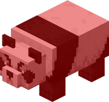
Red Pandas
A series of puzzles.
Downloads
Education Edition
Bedrock Edition
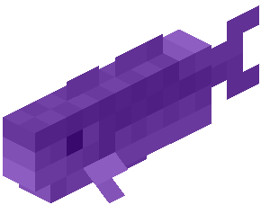
Purple Cods
A series of small custom dungeons.
Downloads
Education Edition
Bedrock Edition
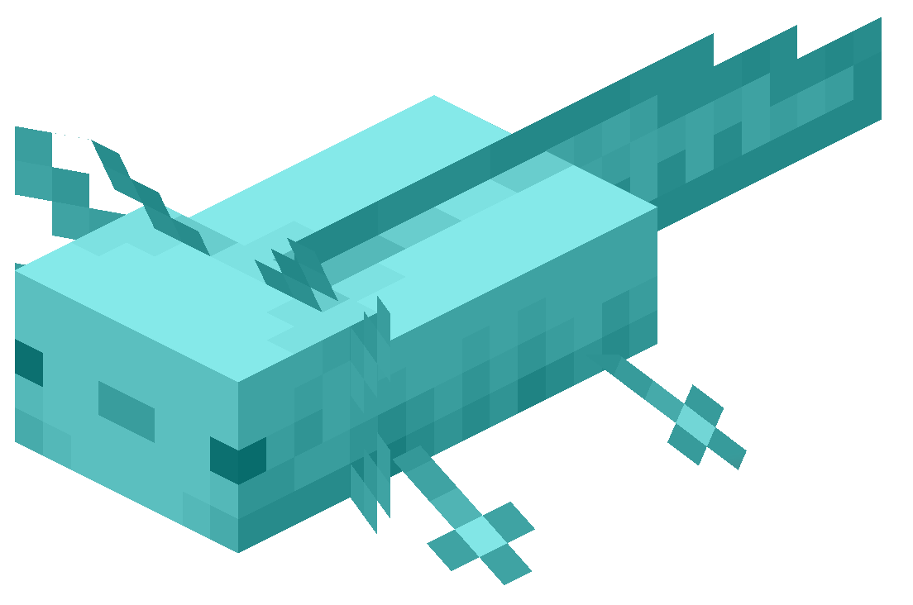
Aqua Axolotls
A series of custom dungeons.
Downloads
Education Edition
Bedrock Edition
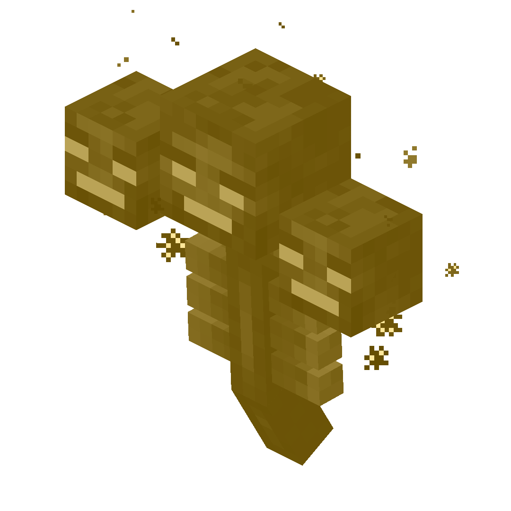
Golden Withers
A collection of various challenges.
Downloads
Education Edition
Bedrock Edition